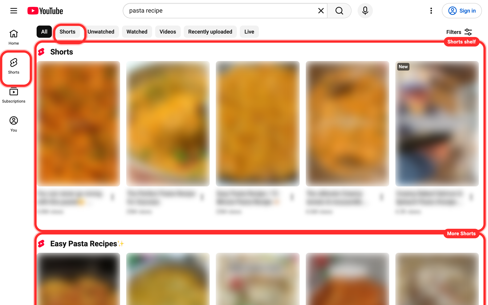
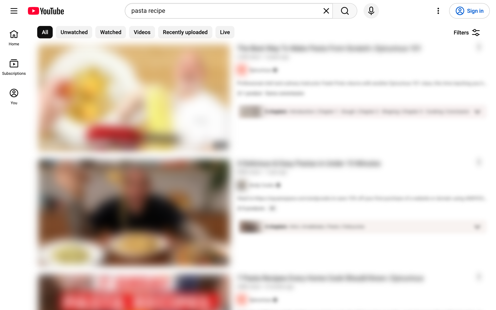
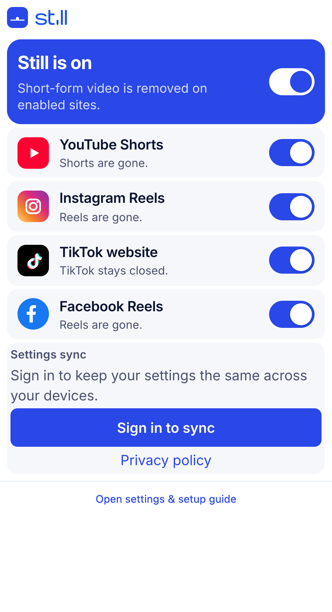
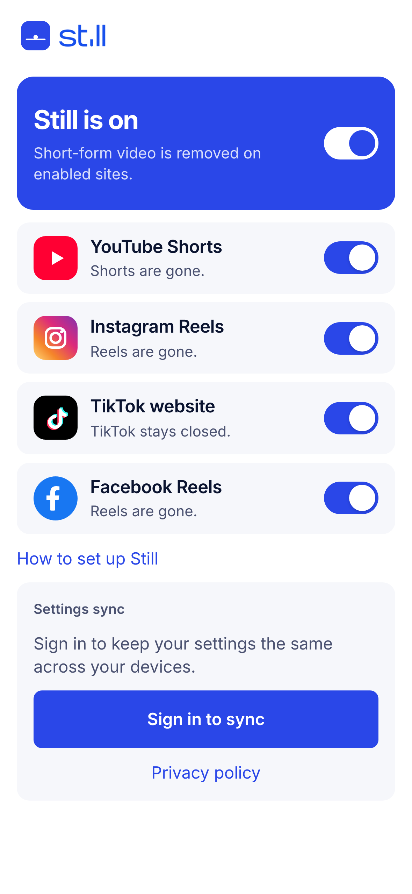

Without Still, Shorts take over the page: a tab, a filter and shelf after shelf. With Still they're gone, and your videos, search and subscriptions stay.


YouTube Shorts, Instagram and Facebook Reels, and the TikTok website. Turn any of them on or off, whenever you want.
No timers. No stats. Just the blocking.

Change them in the Still app on iPhone or Mac, or in Chrome or Firefox. Sign in free, and your other devices keep up.

While Still is on, tiktok.com is blocked in your browser. Still works on websites; it can't change the TikTok app.